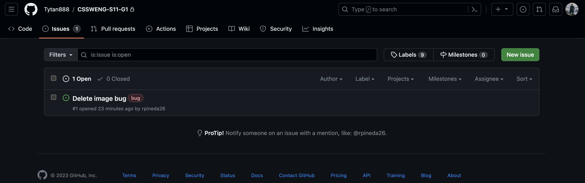
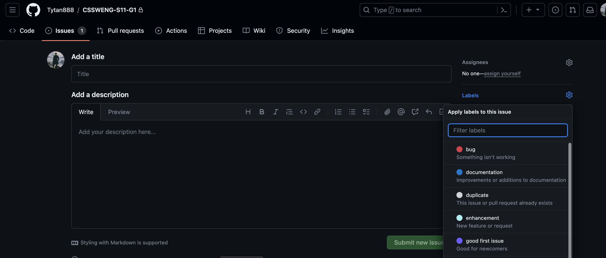
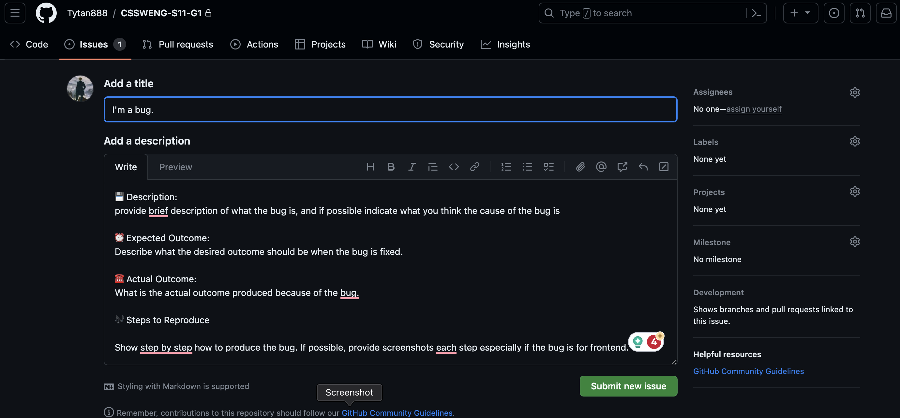

CSSWENG-S11-G1
🌔 To run the server... Create a .env file in the root folder of the repository.
vim .env
In the .env file, include all the necessary variables.
PORT = 'Port number'
MONGODB_URI = 'mongodb://localhost:27017/pearldb'
TEST_MONGODB_URI = 'mongodb://localhost:27017/test'
SALT_ROUNDS = 'can be any number higher than 0'
SECRET ='Any strong password'
WEBHOOK_SECRET_KEY = 'The secret key of the paymongo webhook'
PAYMONGO_SECRET_KEY_HASH = 'The hash key generated from the paymongo secret key'
WEBSITE_URL = 'https://hostaddress:PORT'
DONATION_DISABLED = 'true or false'
Then run the server by typing this command in the terminal...
node start.js
🔱 For developers...
npm test
- Run this to automatically test functions.
- Alternatively, VSCode has a Jest extension that automatically checks the tests when code is updated.
npm run dev
- Run this to start the server with Nodemon.
npm run doc
- Run this to export documentation in HTML through JSDoc.
✅ Naming Convention
- word_word2_word3 : Underscore Notation for File Names
- wordWordWord: Camel Case for Functions, Objects, Variables
- word-word-word: Kebab-Case for Image Names
🚀 git commit
- add: introduce a new feature (even when incomplete)
- cont: continue a feature and still incomplete when committing
- feat: feature is fully complete upon committing
- refactor: change code (copy pasting to different file or renaming things)
- doc: inserting comments inside the code
- fix (bug name): fixing a bug, indicate if fully solved
📖 To check the test coverage report...
- open this file: CSSWENG-S11-G1/coverage/Icov-report/index.html with a browser
✉️ Guideline to Reporting Bugs
- Create a new issue via github. 
- Set the issue label as a bug. 
- Provide a title that is descriptive of the bug and follow the template for the description. 
- Submit the issue and make sure to notify the group of the newly created issue.
--- Copy-paste the bug report template below. ---
💾 Description: Provide brief description of what the bug is, and—if possible—indicate what you think the cause of the bug is.
⏰ Expected Outcome: Describe what the desired outcome should be when the bug is fixed.
☎️ Actual Outcome: What is the actual outcome produced because of the bug?
🎶 Steps to Reproduce: Show step-by-step how to produce the bug. If possible, provide screenshots for each step, especially if the bug is for the front-end.
---End of Copy-Paste---
--- Copy-paste the bug resolution template below. ---
🛠️ Fix: Detail a description of how the issue was resolved in code.
☑️ New Output/Behavior: Describe how the newly fixed feature behaves as intended. Provide detailed screenshots whenever possible.
---End of Copy-Paste---